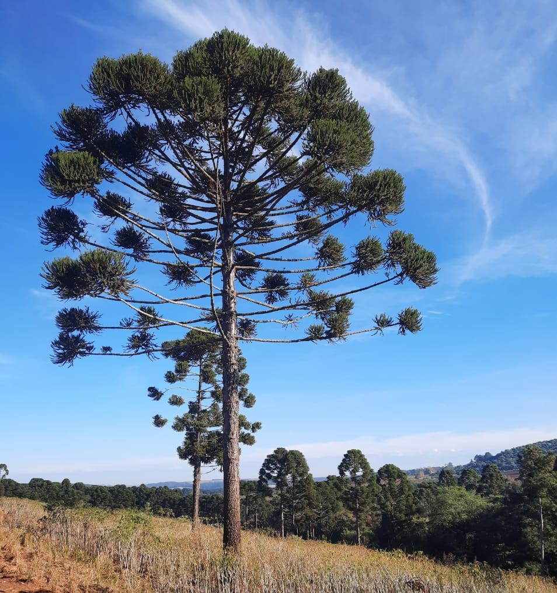
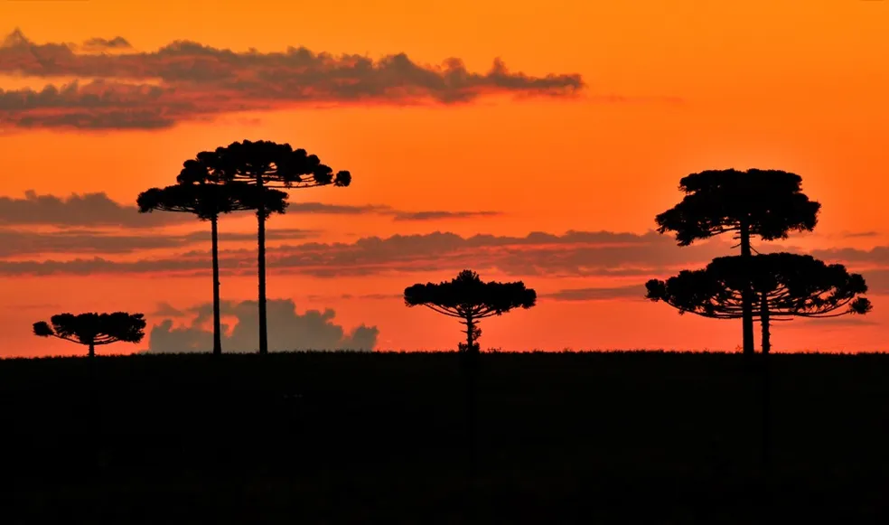
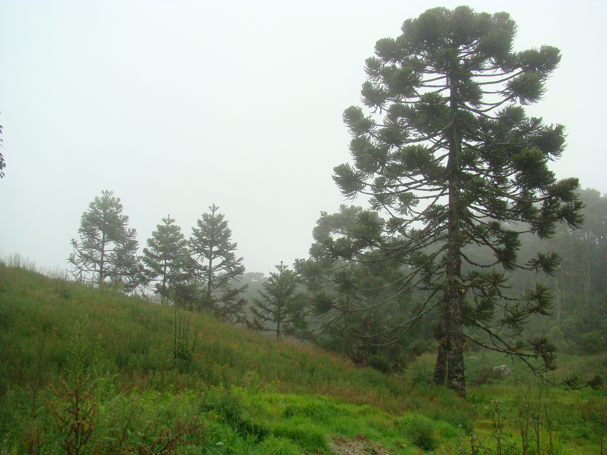

impotância cultural
A araucária (Araucaria angustifolia) é a árvore símbolo do Paraná e da Região Sul. Ela define a paisagem local há milhares de anos, unindo a sobrevivência dos povos originários, a culinária do pinhão, a história econômica do ciclo da madeira e a identidade cultural dos sulistas.

contexto histórico
Araucaria angustifolia (Pinheiro-do-Paraná) tem ancestralidade de mais de 200 milhões de anos, mas sua grande expansão em forma de florestas densas nas terras altas do Paraná ocorreu há cerca de 4 mil a 5 mil anos, impulsionada por mudanças climáticas e pelo manejo dos povos indígenas originários.

importância cultural
A araucária (Araucaria angustifolia), ou pinheiro-do-paraná, é o maior símbolo natural e cultural do estado. Ela define a paisagem dos planaltos, inspira a toponímia local — como o nome da capital Curitiba ("lugar de muitos pinheiros") e do município de Araucária — e representa a resistência, a ancestralidade e a memória coletiva do povo paranaense.
